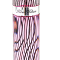

Perfume
Wearing of amulets and devotional medals to provide protection or ward off evil is common in some cultures; these may take the form of symbols (such as the ankh), stones, plants, animals, body parts (such as the Khamsa), or glyphs (such as stylised versions of the Throne Verse in Islamic art).

CARTIER
Although artistic display has clearly been a function of jewellery from the very beginning, the other roles described above tended to take primacy.[citation needed] It was only in the late 19th century, with the work of such masters as Peter Carl Fabergé and René Lalique, that art began to take primacy over function and wealth.
